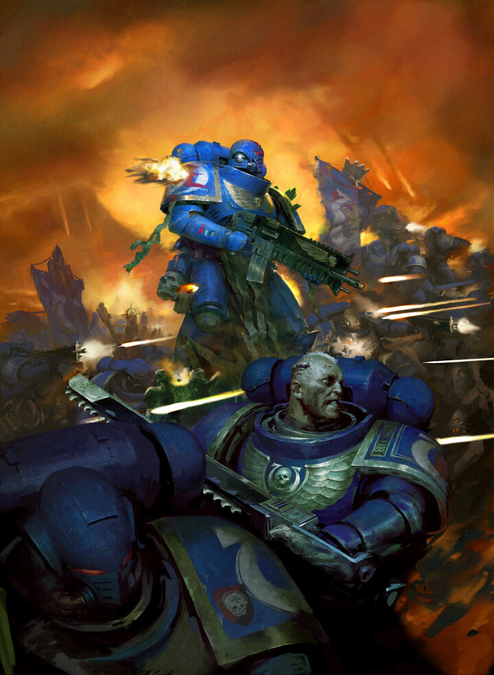
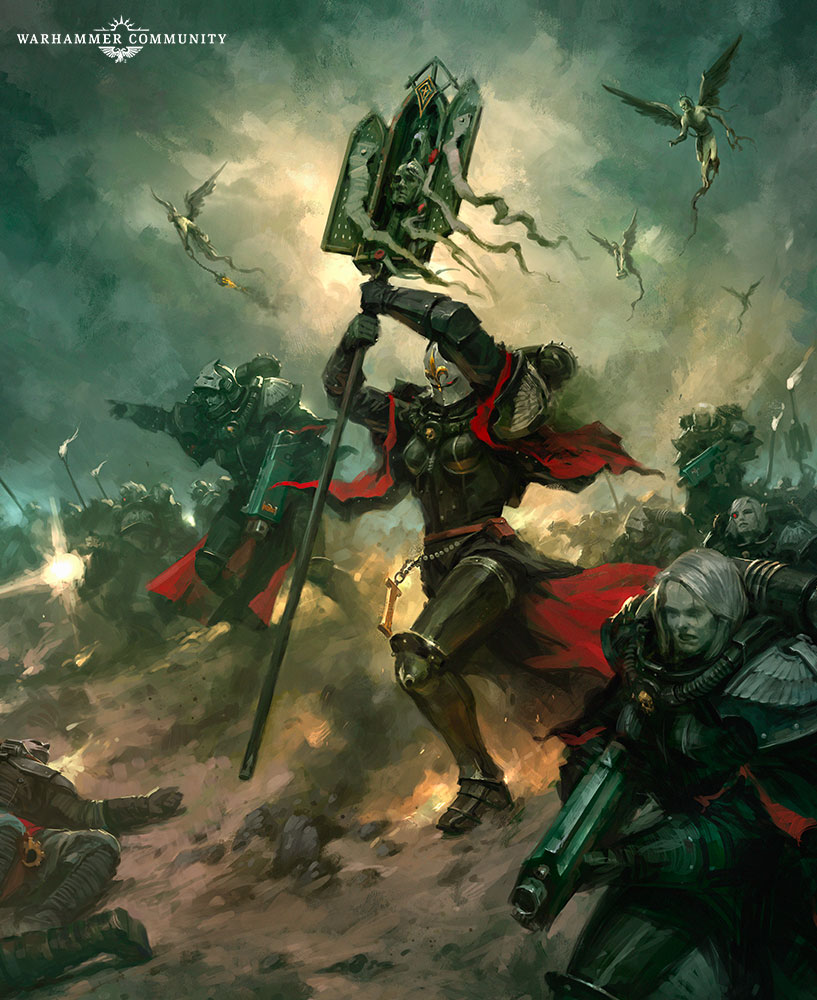
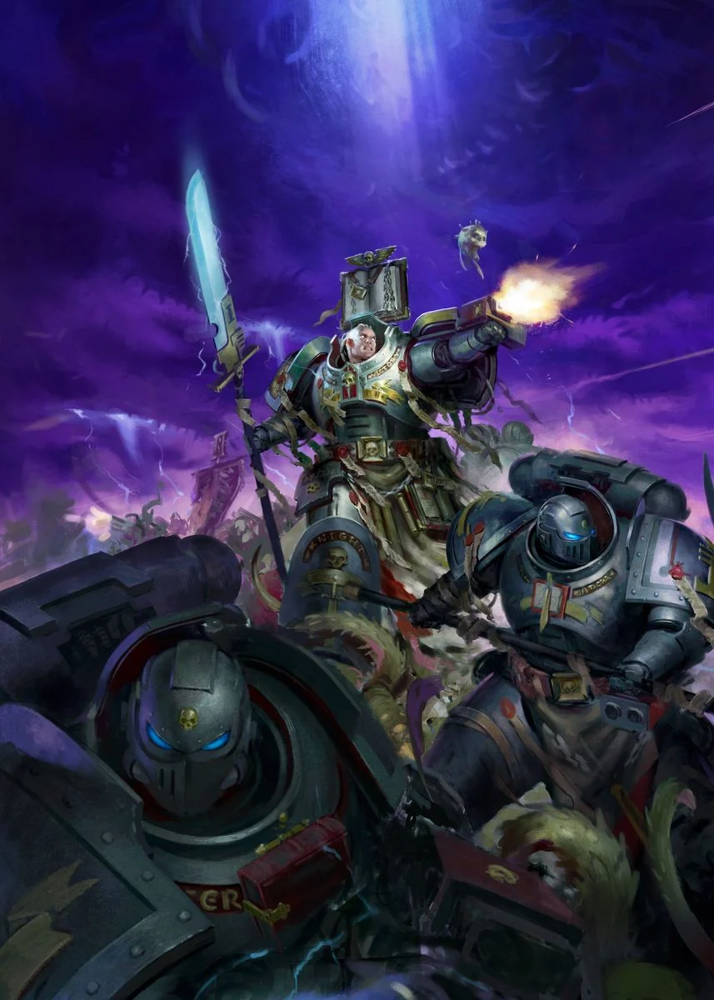
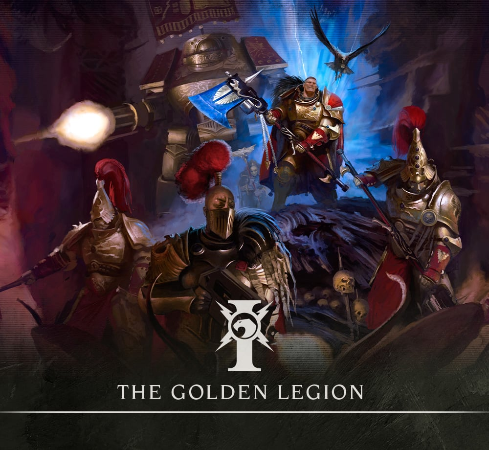

Imperium of Man
Overview and Brief History
The Imperium of Man is the name of the galactic empire of humanity. Their capital Terra, the gothic name for Earth, where the imperial palace resides, and the Emperor of Mankind sits upon a golden throne. Now, humanity have been around for a longtime. Its reach expands across almost the entirety of the milky way galaxy, and their reach is continuously growing.
To understand the Imperium in its current state we have to understand the brief history it has. Firstly, humanity was thrown into a dark age, collapsing and barely holding on. Then as if by divine intervention, a man of perfection and incredible Psychic power revealed himself, known as the Emperor of Mankind. His goal was to reunite humanity and thus the Imperium was born, though before he left to travel across the stars, the Emperor created 18 sons known as the Primarchs. These primarchs would lead a legion of their own known as the space marines, each legion using what we call a Gene-seed, a special package of dna containing the blueprints to turn average men in immense supersoldiers. These gene-seeds used the dna from their respective primarch, which each legion gained various attributes of their primarch. For example, one legion called the White Scars have a primarch who enjoys going fast, so his space marine legion also enjoys going really fast.
As the Emperor and his 18 sons, the Primarchs, soared across the galaxy, reuniting old human colonies, things changed relativaly quickly. Horus, one of the Primarchs and the Warmaster leading the Emperor's armies becomes corrupted. How is he corrupted you may ask well corrupted by the forces of Chaos. Now if you have read the small overview on the homepage in relation to the warp this will make a bit of sense, but if you haven't Irecommend you go to the home page, read the brief overview and introduction there then come back. Anyways, within the Warp resides Chaos and within Chaos resides 4 gods of Chaos. These four will be talked over more in the Forces of Chaos page but for now this will suffice. These four gods corrupted Horus who then sway eight other primarchs to his side and rebelled against the Emperor. This civil war ended with Horus obliterated from existence by the Emperor, and the Emperor mortally wounded by Horus. This event is known as the Horus Heresy and it is this event that led the Imperium down the path to where it is today.
The Imperium now is a fanatical, xenophobic people, believing the Emperor, who is a barely alive corpse on a golden throne, connected to a machine that allows the Imperium to travel through the warp across the galaxy somewhat safely, as a diety, thus known as the God-Emperor. Because of this fanatical belief, which ranges on a scale of they believe in this cult to so fanatical it is utterly terrifying, heresy is very frowned upon, so much so it is taken care of through death. If you say anything against the Emperor it is considered Heresy and thus you are killed, if you believe in another god than the God-Emperor that is also heresy and deserving of death. If you are a Xenos, alien, you are also deserving of death, due to the xenophobic culture of the Imperium.
This is the current state of the galactic empire of mankind, but it is by far the largest group within the galaxy. Within the Imperium reside many factions that further the work of the Imperiums goals, seen down below.
The various factions have unique lore, armies, and uses within the Imperium. Though their lore and histories won't be deeply delved into, thus a brief summary of what each faction is, what they are, and how they work will be given. With each a few short profiles will be given of models within the tabletop to give a few spotlights.
Astra Militarum

The Astra Militarum, the Hammer of the Emperor, the Imperial Guard, and the first and last defense of mankind. The Astra Militarum is by far the largest army of the Imperium, consisting of everyday men and women. The Imperial Guard fight with overwhelming numbers and sheer fire power. The main weapon of the Imperial Guard is the humble Lasrifle, a laser rifle capable of blowing chunks of concrete apart and limbs off of enemies. A very powerful weapon in todays world, one of the weakest in the world of 40K, nicknamed the flashlight from time to time.
The Imperial Guard have a very WW1 and WW2 themeing to their uniforms and appearance, and making up the amry of the Guard are varying regiments who specialize in various fields of combat. Battles consist of lines upon lines of artillery, firing shells every second, cracking the crust underneath the feet of the enemy, as tanks rumble across the ground, as a sea of hundreds of millions of guardsmen cover the ground, the sky blocked out by aircraft, the true embodiement of overwhelming force and firepower.
Space Marines
The Angels of Death, the Space Marines are super-soldiers, the defenders of the Imperium. Space Marines are some of the strongest and fastest warriors the Imperium can offer. Outfitted with armor to enhance their abilities and survivability, they take on many roles within the war theater of the Imperium. The Space MArines are divided into various legions, as mentioned within the brief history above, where they get their special skills and abilities from their Primarch. Their are a total of nine legions that remained loyal to the Imperium, below are each of the legions with a very very brief overview.
Ultramarines
The Ultramarines, a jack of all trades, their Primarch Rowboat Girlyman(Rouboute Goulliman). The Ultramarines are the poster boys of Warhammer 40K and is seen the most within lore. They are good in every field, a jack of all trades but do not specialize in one field, able to adapt relativaley quickly to whatever is thrown their way. They have a heavy roman themeing with armor and with how they are named.
Dark Angels
The Dark Angels, a very secretive legion, their Primarch, Lion el Johnson, the greatest swordsman of the Imperium. They have a very arthurian in style and theme, focusing on melee and swordsmanship along with secretive information collecting and interrogation.
Imperial Fists
The Imperial Fists, their Primarch Rogal Dorn, defenders, focusing on fortification. Where they stand they shall not be moved.
Raven Guard
The Raven Guard, Primarch Corvus Corax, specialists in stealth and ambush, guerilla fighters and swift jump pack strikers.
Blood Angels
The Blood Angels, Primarch Sanguinius, now dead, his legion suffering from the Red Thirst, turning them into vampires and the Black rage, a maddening fury to give vengeance to those they believed is Horus, the very one who slew their primarch.
White Scars
The White Scars, primarch Jaghatai Khan, speedsters and speicalists in lightning strikes, utilizing bikes and buggies, though taking no credit for their actions.
IronHands
The Iron Hands, Primarch Ferris Manus, also dead. Creators of machines and believers that cybernetics are greater than flesh.
Space Wolves
Space Wolves, Primarch Leman Russ. Not much to say besides vikings in space with a mutation for some to become literal wolf people.
Salamanders
Salamanders, Primarch Vulkan. Specialists with flame weaponry, taller than the average psace marine, blacksmiths and protectors of the people of the Imperium.
Adepta Sororitas
The Adepta Sororitas, an all female group also known as the Sisters of Battle or the Daughters of the Emperor, are a very zealotous group within the Imperial cult. They are the closest thing we have to nuns in space, their zealoutry so great and their faith so strong literal miracles occur in their presence. They are a very over the top group, believing in martyrdom as a tenant within their group. They are so over the top that they have a funeral pracession go through the battlefield giving empowering faith to their forces, an organ that is a literal missile launcher, their drop pods are churches, and their ships hover in low orbit blaring war hymns as they douse the battlefield with holy water. This is the Battle Sisters and they are a substantial force to be reckoned with.
Grey Knights
Grey Knights are an elite group of Space Marines, their gene seed coming directly from the Emperor himself. Unlike other Space Marines, their armor is more advanced, and every single Grey Knight is a Psyker. Their main goal is to fight Daemons and banish them back to the warp. Under normal circumstances, Psykers usually go insane, along with normal people, when Daemons around around them, yet Grey Knights are different. Their training makes their minds and hearts so pure, Daemons cannot corrupt them, and they are able to use psyker magic in a daemons very presence, which under normal circumstances would make the psyker go bonkers. Grey Knights are very secretive, and barely anyone knows they even exist, though one problem arises when they deal with daemons. Lets say you are a guardsman, fighting daemons and the grey knights arrive. They kill the daemons, but they follow a scorched earth policy when they deal with daemon threats. Daemons corrupt everything, and since you were fighting daemons, guess who isn't leaving the planet.
Adeptus Custodes
The Adeptus Custodes are the protector's of the Imperial Palace on Terra, and guard the throne room which the Emperor's almost dead corpse reside. To best understand Custodes let me use an example. Let's say a soldier is your baseline, your Space Marine would be a super soldier, your Grey Knights super soldiers squared, the Custodes are your super soldiers cubed. Wearing brilliant golden armor and standing about nine ten feet tall, they have the best training, armor, weaponry, everything to defend the imperial palace. Their creation is essentially from a test tube by the Emperor himself, and they stand motionless like statues for thousands of years, without the need to sleep or eat. Some groups of custodes however go out into the galaxy and perform various tasks, for example one group goes out and protects random people within the imperium, for what reasons it isn't always clear but it is come to the conclusion that that person may be someone greatly important in the future thus they protect them.
Amongst the Custodes are a group of female warriors known as the sisters of silence. These warriors are special, having a mutation known as a Pariah gene, or most commonly known as a blank. Every single person is connected to the warp, except these blanks give off a horrifying aura that cuts that link. Normally these blanks are killed upon birth as they give off an aura that those who are near them, regular humans not psykers, state feeling sickenly uncomfortable or severely sick. While the custodes deal with threats like heretics and so on, the sisters of silence deal with more daemonic and psyker threats, working side by side.
Imperial Knights

The Imperial Knights, followers of chivalry and honor. There isn't much to say about them, mainly that they are giant mechs the size of small homes with a pilot that drives them. They are equipped with devestating weapons and sort of follow their own code and rules, helping the imperium from time to time. Beyond that, they are giant mechs that stomp around and destroy stuff.
The Inquisition

The Inquisition, the secret police and highest authority, besides the emperor and primarchs, of the imperium. They are detectives who ensure no rebellious seeds of any kind are sown in the Imperium. They are sorta like things like the kgb, fbi, gestappo and so on except with practically all the authority you can give them. With that said they specialize in three fields, heretical forces, chaos, and xenos. Each order representing eaxch field are filled with various inquisitors who go out and do detective work and eliminate any threats that may be within the imperium.